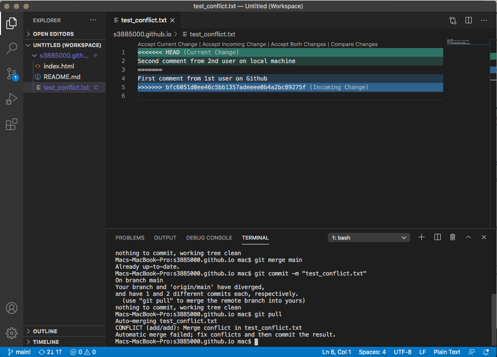

Git Essential basic commands
What is Git and Github?
Github is like a Wikipedia version for programmers. It’s a cloud-base hosting platform that allow users to edit and make changes on files from anywhere around the globe. Git is an open-source coding management system for tracking changes in any set of files. It originally designed to assign work among others programmers to collaborate on project during a software developement and other etcetera need when it comes to coding.
How to Install Git and Github
First of all, you need to create a Github account. Follow by this link: click to page in new window

After done setting up your Github account, you need to log in and create a new repository. What is a repository? A repositoty is like a folder for your projects. A project’s repository hold all your project’s files and allow users to see the log history of changes.
Choose default setting for your repository.
Secondly, you need to install Git to your local machine. Follow by this link: click to page in new window
*Choose compatible version for your operating systems.
After finish installing git on your operating system you’re ready to perform some basic Git commands. We recommend to use Visual Studio Code to perform all of Git commands due to the convenience and a free-source code editing software.
Basic Git commands
There are quite few Essential Git commands every developers should know when it comes to coding.
1. Git config
Git config allow users to set up a username / email address for main configuration file.
How to: git config --global user.name = “<your user name>” and git config --global user.email = “<your user.email>”
2. Git clone
Git clone allow users to clone a repository into a new directory. e.g: your Github URL.
How to: git clone <URL>
3. Git status
Git status allow user to check the status of files you’ve changed on your local machine.
How to: git status
*file content successfully committed on local machine.
*file content has not committed on local machine yet.
4. Git add
Git add allow users to add new or change files from your local machine to your Github repository.
How to: git add <file_name>*for specific file/ git add . *to all files
4. Git commit
Git commit let users to snapshot change stages on repository file.
How to: git commit -m “<description on changes stage of file>”
6. Git pull
Git pull is used to download content from your Github repository to your local machine.
How to: git pull
7. Git push
Git push command is used to upload changed content from local machine to your Github repository.
How to: git push
Resoling Conflict
When a new file was created by another user on your Github repository and you try to create a new file on your local machine with a same name but different content and try to push to Github. You will encounter a conflict. Here is how to solve the conflict between two files.
I. Another user on your Github repository created a new file e.g: test_conflict.txt
II. Content in test_conflict.txt is "First comment from 1st user on Github”
III. A new file was created on Github repository
IV. A duplicated file name created by another user on his/her local machine without knowing there’s a same file already been created on Github repository.
V. Then try to commit and merge to Github. As result, user will encounter conflict on his/her local machine. Visual Studio code will ask user permission to accept the current change or incoming change.
VI. If accept the current change git will update current change on local machine. User on local machine needs to perform git commit and push procedure again.
VII. Conflict resolved.
VIII. Content updated.
Branching
Git branch is basically is like a branch of a tree. Branch is used to divide and record the flow of history. It will not affect another branch, so you can perform many changes simultaneously in the same repository.